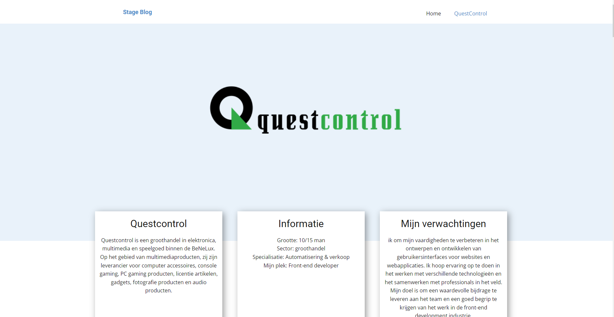

Dit is mijn stageblog die ik heb gemaakt voor het doen van mijn eerste stage periode. Hiervoor heb ik Wordpress gebruikt en een plugin genaamd Nicepage wat ik ook in mijn stage periode heb moeten gebruiken.
Tijdens mijn stageperiode heb ik veel geleerd en nieuwe vaardigheden ontwikkeld. Ik heb me beziggehouden met het aanpassen van WordPress-thema's, het werken met de Nicepage-plugin, het designen van website/apps in figma en het creëren van 3D-animaties in Blender.